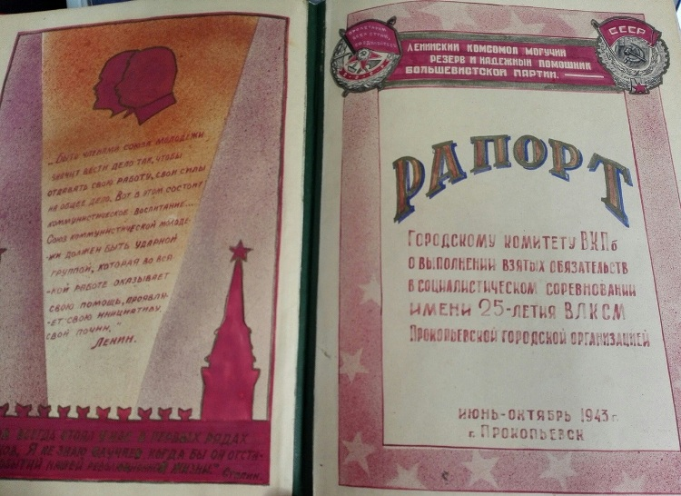
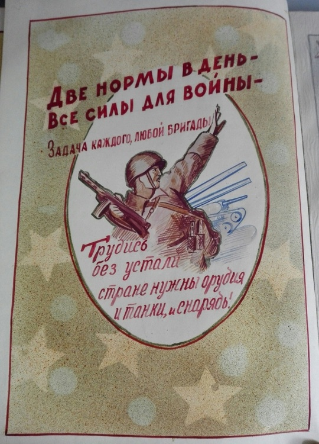
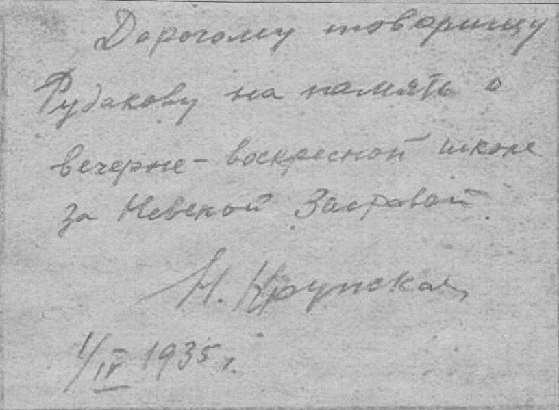
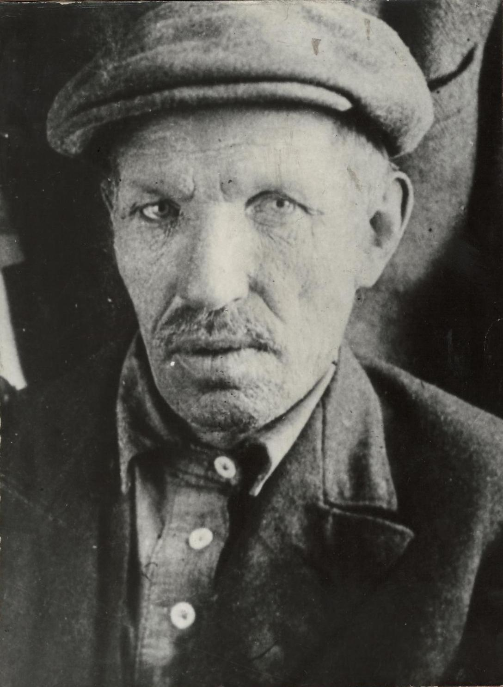
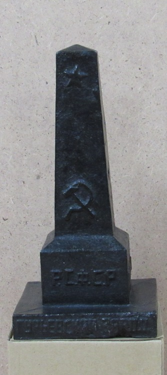

Рапорт Городскому комитету ВКП(б)

Комсомольская организация имела огромное значение в жизни советского человека. Она была третьей и заключительной ступенью на пути к членству в партии на ряду с октябрятами и пионерами. В комсомольцы человек принимался уже относительно взрослым(с 14 лет) и состояли в комсомольском движении вплоть до вступления в коммунистическую партию. Сложно переоценить морально-патриотический вклад, который вносил комсомол в сознание советской молодежи. Прокопьевское комсомольское движение так же имело весьма широкое представительство. Комсомольцы участвовали в городском строительстве, озеленении, социалистических соревнованиях на предприятиях и многих других аспектах жизни Прокопьевска.
Во время ВОВ в 1943 году был разработан и принят рапорт о взятых обязательствах в социалистическом соревновании. Рапорт представляет собой рукописное иллюстрированное издание, в котором отражены все основные сведения и показатели о работе предприятий и отдельных комсомольско-молодежных бригад. 8 бригад получили звания фронтовых.Фронтовая бригада на предприятии — это коллектив, который, не считаясь со временем, должен выполнить фронтовое задание.В рапорте содержится большое количество статистической информации по количеству рабочих, добыче угля, промышленным показателям, экономической и социокультурной деятельности. Например, из текста ясно, что «… силами комсомольцев-шахтеров добыто в свободное от работы время 79445 тонн угля.» Всего же за время соревнования добыто и отправлено на фронт 138100 тонн топлива. Комсомольцы занимались и обучением новых молодых работников. Всего горняцкими профессиями овлядели1158 человек.

Работали комсомольцы и на колхозных землях, обрабатывали огороды, заготавливали продукты, травы и вещи, которые в последствии отправлялись на фронт.
Кромеударной промышленной деятельности комсомольцы занимались художественной самодеятельностью. На шахтах рудника было создано 29 кружков. Помимоэтого, на шахтах и предприятиях города работали 75 кружков по патриотическому воспитанию молодежи, где изучали книгу Сталина об отечественной войне. Идет выпуск боевых листков, мобилизующих на выполнение и перевыполнение планов, организованы доски показателей для каждого молодого рабочего для более качественного отслеживания личных результатов работника целью последующего премирования.
Подписан рапорт секретарем Прокопьевского городского комитета ВЛКСМ С. Внуковым.
«Заветы Ленина»

В 1935 году Максим Илларионович Рудаков побывал у Н. К. Крупской в Ленинграде. Именно об этой встрече писала Надежда Константиновна в газете «Правда»: «Недавно ко мне зашел один старый рабочий – Рудаков, приехавший по делам из Кузбасса, из Прокопьевска. В 90-е годы он работал в Питере, за Невской заставой, был близок товарищу Бабушкину, был одним из сознательных, активнейших рабочих того времени. Он был моим учеником по вечерней воскресной школе. Мы с ним не виделись 40 лет. Приехав в Москву, он зашел ко мне. Мы оба очень взволновались. Спеша, он рассказал свою жизнь, как сидел в тюрьме, как был в ссылке, как остался в Сибири после 1905 года. «Сын-инженер, дочь – ВУЗ кончает, - говорил он, - все мы – коммунисты». А потом, волнуясь, сказал: «Все, о чем мы тогда говорили, исполняется теперь».
На память о встрече Крупская подарила своему ученику книгу своих статей «Заветы Ленина о раскрепощении женщины», выпущенную «Партийным издательством» г. Москвы в 1933 году.
Эта реликвия представлена для посетителей в нашем музее. Одна из опубликованных в книге статей «Международный женский день» была написана в 1928 году.
Надежда Константиновна Крупская в ней пишет:
«У работницы те же интересы, что и у рабочих.
Работница – товарищ рабочего по борьбе.
Ее капиталисты угнетают не меньше, чем рабочего.
Работница шла рука об руку с рабочим в революции 1905 года.
Работница также страдала от мировой войны, как рабочий.
8 февраля 1917 г. питерские работницы, измученные голодом и холодом, первые вышли на улицу с требованием «хлеба! мира! – верните мужей из окопов!» Их выступление послужило началом Февральской революции, которая свергла царя.
Советская власть – власть трудящихся. Все, что дала она рабочим и крестьянам, дала она и работницам и крестьянкам.
Работницы и крестьянки празднуют советские праздники, празднуют и международный день 1 Мая. Но у них имеется и свой международныйпраздник – день 8 марта. Зачем понадобилось устраивать специально женский международный день, разве у рабочих и работниц интересы разные?
Тов. Ленин так отвечал на этот вопрос:
В буржуазных странах мужчина смотрит на женщину как на свою рабу, как на хозяйку, как на предмет своего удовольствия, и этот взгляд так распространен, что он временами заражает даже и многих рабочих.
Вот все это и заставило Клару Цеткин на второй Международной конференции (совещании) женщин-социалисток в Копенгагене, в 1910 г., внести предложение – один день в году, 8 марта, сделать днем смотра сил женщин-работниц, готовых бороться за дело освобождения работниц.
С тех пор во всех странах день 8 марта празднуется на тысячах собраний.
В праздновании женского дня должны принимать участие не только работницы и крестьянки, не только все трудящиеся женщины, в нем должны принимать участие и рабочие и крестьяне.
Как рабочий не может сбросить с себя власть капиталистов, если в борьбе с капиталистами не будут принимать участие работницы, так и работница не может добиться полного своего раскрепощения, если ей в этой ее борьбе не помогут сознательные рабочие.
Работницы работают сообща на фабрике, часто встречаются, говорят, они лучше сорганизованы. Им надо помогать крестьянке в ее борьбе. И мы видим, что у нас в Советской стране работницы и крестьянки идут рука об руку. Международный женский день – их общий праздник» (Приводится с сокращениями).
Подарок Ленину

В Прокопьевском краеведческом музее хранятся два редких предмета, которые причастны к событию, сыгравшему поворотную роль в истории нашей страны, - Великой Октябрьской революции, 100-летие которой мы недавно отметили.
Эти предметы связаны с личностью Рудакова Максима Илларионовича.
Профессиональный революционер родился в 1873 году в Рязанской губернии в семье крестьянина. 9-летним мальчиком поступил учеником на текстильную фабрику Саввы Морозова в Орехово-Зуево Владимирской губернии. В конце XIX века с 1890 по 1895 годы он работает текстильщиком в Петербурге на текстильной фабрике. Здесь же он учится в вечерней воскресной школе за Невской заставой, где преподавала соратница и жена Ленина Надежда Константиновна Крупская.
Рудаков неоднократно подвергался преследованиям царского правительства. Сидел 2 года в знаменитых петербургских «Крестах», затем был выслан в Полтаву. Перебравшись в Харьков, продолжил подпольную работу.
Поражение революции 1905 года заставило его бежать в Томск. Здесь он работал среди трудовых масс в полной конспирации. И все же царская охранка не оставляет в покое своего поднадзорного. Дочь Рудакова Валентина Максимовна вспоминала о неоднократных обысках в их квартире.
Октябрь 1917 года застает его в Томске. Снова подполье при колчаковском режиме. Когда было покончено с этим режимом, он работает в Арлюке, в Юрге. В 1922 году партия направила М. И. Рудакова в Гурьевск.
Покончив с войной, Советская страна стала переходить к мирному строительству. В эти трудные годы восстановительного периода в Кузбассе широкое распространение получили коммунистические субботники. Первые субботники в Кузбассе были проведены в начале 1920 года горняками Судженки и Анжерки. Первомайские праздники 1920 года вылились во Всекузбасский субботник. Хозяйство края стало налаживаться. Восстанавливались и реконструировались шахты, росла добыча угля. Уже в 1921 году Кузбасс дал народному хозяйству страны угля больше, чем в 1913 году. Это был единственный в стране бассейн, который превзошел довоенный уровень.
В октябре 1921 года трудящиеся Кузбасса совершили свой первый трудовой подвиг: железнодорожный путь от Кольчугина до Прокопьевска был построен за пять месяцев. Путь к жемчужине Кузбасса – Прокопьевску прокладывали силами красноармейцев Сибирской трудовой бригады с участием местного населения. 21 октября на станции Усяты раздался первый паровозный гудок. Прокопьевский уголь вышел на Транссибирскую магистраль и на заводы Урала.

Кроме железнодорожной ветки ударными стройками были объявлены Кемеровский и Гурьевский заводы, Кольчугинские и Прокопьевско-Киселевские рудники. Их снабжение было приравнено к снабжению Красной Армии.
По поручению Ленина на Прокопьевский рудник была передана динамомашина типа «Шехау» мощностью в 250 лошадиных сил и генератором в 410 киловатт. Небольшая машина приводила в движение лесопилку шахты «Коксовая-1» и водокачку, а вечером освещала часть рудника. Потом машина пострадала во время пожара, а позднее ее передали в лесное хозяйство Красноярского края. Но с нее по существу началась энергетика Кузбасса. И память об этом увековечена в мемориальной доске, установленной на здании «Прокопэнерго», которое находится в направлении поселка Ясная Поляна.
А в Гурьевск по поручению Ленина с Урала было направлено оборудование для домны, а из Петрограда – паровая машина. Когда была реконструирована маленькая домна и 23 марта 1922 года пущена в эксплуатацию, то первый слиток чугуна металлурги послали в подарок Ленину. Модель изготовляли формовщик И. А. Кудрин заливщик Н. Я. Давыдов и вагранщик Ф. Я. Ряшин. Высота отливки 24 см, ширина основания 10 см. На верхней части отлито изображение 5-конечной звезды, а ниже – серпа и молота, под ними слова «РСФСР. Гурьевский завод».
Памятных отливок было сделано, видимо, несколько. Одну из них привез в Прокопьевск М. И. Рудаков, куда переехал сюда с семьей в 1927 году.Модель чугунного слитка, аналогичного подарку вождю революции, хранится в прокопьевском музее.
Здесь он работал председателем страховой кассы, заведующим горздравом, в последние годы жизни – до 1938 годы, завхозом инфекционной больницы.
Назад